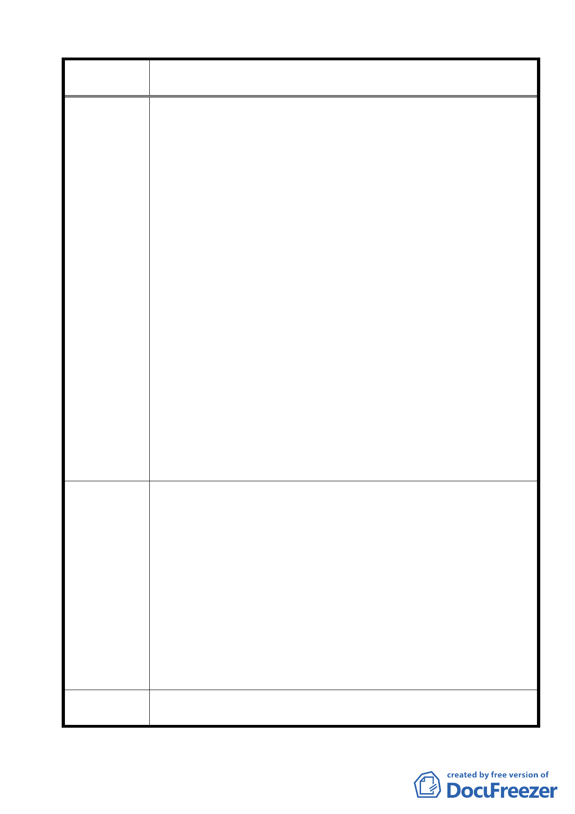

案名
建議辦法
委員會議
決議
變更臺北市士林區陽明山山仔后地區第二種住宅區為特定住宅區
細部計畫案
盤的解決，但美軍宿舍群的專案變更若不考慮陽明山上已達飽
和的開發問題，將會加劇陽明山區過度開發、交通死結、水電
不足與環境災害。因此，我們強烈建議，美軍宿舍群內的開發
議題應在本次的歷史建築與文化景觀變更中一併考慮，若讓此
區繼續開發，造成陽明山上環境問題的惡化，那麼未來的都市
計畫的通盤檢討也只能亡羊補牢了。我們將計算過程詳列在後：
2.若將美軍宿舍群之建蔽率與容積率調整為 40%／60%，則生活
環境已侷促擁擠的山仔后與華崗社區將再增加 28363.5 平方公
尺的樓地板面積！再以 2004 年中華民國統計年鑑的統計資料為
依據，台北市每戶平均住宅坪數為 31 坪（約 102.48 ㎡），則
28363.5 平方公尺的樓地板面積可再增加約 277 戶家戶，這些家
戶以台北市平均每戶 3.1 人計算（中華民國統計資訊網/2000 年
戶口與住宅普查/台閩地區住戶數、人口數及平均戶量－按縣市
別分），那麼陽明里將再增加 859 人，對照陽明里目前登計人口
為 3159 人，則 40%／60%的建蔽容積規範將近會再增加超過四
分之一以上的陽明里人口！！如此的人為開發衝擊，將嚴重破
壞陽明山的環境，不僅無法達到都發局所言的示範生態綠色社
區，陽明山也將從台北市民的後花園，劣化為過度開發的「不
知所終的地方」（geography of nowhere），什麼都沒有，什麼也
不是，只剩擁擠的環境與污染的地景。所以我們認為最合適的
建蔽率與容積率應比照目前基地的現狀水準，不應再往上調
整，才能達到保存文化景觀與維護生態綠色社區的雙贏目標。
1.建議美軍宿舍區建蔽率與容積率按照基地建築現況予以保存
（除 H-1 區的建蔽率與容積率為 30%／60%之外，其餘皆依 30%
／30%做為開發規範）。
2.新增第二種住宅區之使用項目
除了細部計畫案所列之項目外，建議可再增加下列的使用
方式，以增進文化景觀保存再利用的公共價值。
（1）社會福利：可包括第五組：教育設施、第七組：醫療保健服
務業、第八組：社會福利設施與第十五組：社教設施。
（2）我們肯定聯誼社的保存規範，但本基地是美軍俱樂部遺址，
留有運動場等運動設施，建議針對聯誼社基地可以「第六
組：社區遊憩設施」作為社區運動場來活化再利用，將更符
合文化景觀保存再利用與公益原則。
同編號 2 決議內容。
41